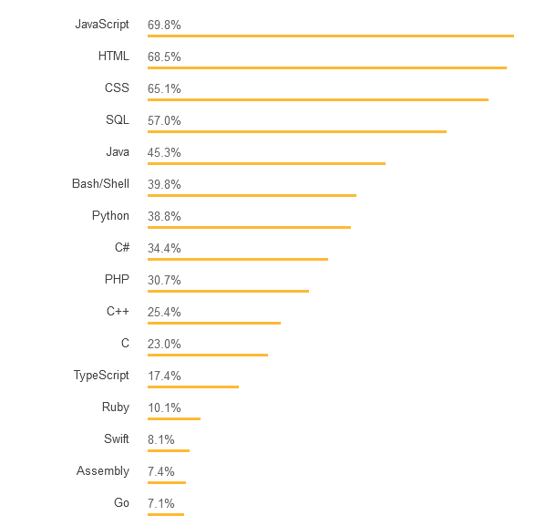
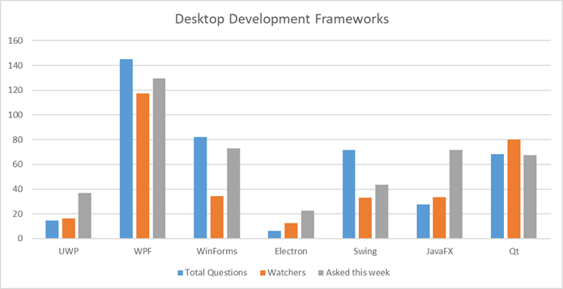

Are you confuse to choose the programming languange? to start your carrier in computer science field this blog will help you out to reslve your confussion and get started your carrier.
The main thing that was bother a lot of student is to What should they learn, where should they start? What should they know to get first job as a programmer?.Beginners are stuck at the choice, there isn’t a straight path to become a good programmer and the community isn’t so warm in welcoming the newbie questions like “is python is a good languange to start with???”.
But always keep in mind that Programming languages are just tools and as you know there are tools that are better for certain jobs.
What Languange,Technology or Skill??
For Start Learning a new Languange you should know What do you want? Are you excited to build mobile apps, a website, a website like Facebook or a website like twitter, or do you want to build a desktop application like Photoshop? Maybe you are fully into the game development? Mobile? Desktop? or Anything else.
And if you want to learn a new languange to get job in a particular industry you have to find out the main skills you should master to successfully pass the technical interview. But first, we should put things in order, let’s dive into the programming world.
There are mainy three platform for programming langunage's
- Web Development (Google Search, Facebook, Amazon, Twitter and others)
- Desktop Application (Dropbox, Photoshop, Visual Studio, Skype and others)
- Mobile App (Youtube, Instagram, Uber and others)
Most of the Services exist for various platform like Amazon is Web Development,Mobile App and Dekstop Application
WEB DEVELOPMENT
Web development broadly refers to the tasks associated with developing websites for hosting via intranet or internet. The web development process includes web design, web content development, client-side/server-side scripting and network security configuration, among other tasks.
Web development is also known as website development.
There are two broad divisions of web development – front-end development (also called client-side development) and back-end development (also called server-side development).
Front end:-
If you want to master the look and feel, i.e. build websites that are so beautiful that users fall in love, you should know HTML (the look), CSS (the look and feel), JavaScript (the feel). This isn’t just enough, using pure JavaScript is not enough nowadays, so you have to choose the right framework, currently popular Angular, React or Vue. Which one to choose is mostly based on the company you like the most, Google or Facebook? Go with Angular if you like Google, and with React if you like Facebook. If you don’t like any of them (weird), go with Vue. Simple! Besides these, you should master some fundamental concepts, like the inner workings of the HTTP Protocol, be familiar with web servers (at least you should not be scared of names like Apache or Nginx). Being a front-end developer means you get the data to render (beautify for users) from the back-end, so some minimum understanding of what an API is, what is JSON (and why it’s better than XML) is a must.
Back end:-
The classic set of backend technologies (the “technology stack”) is called LAMP. It is an acronym that stands for Linux (operating system), Apache (server), MySQL (database), PHP (server-side language).
However, modern backend technologies are quickly replacing LAMP and other more traditional ones due to their power and simplicity, and due to their incredible community support. Lets talk about a few of these backend “frameworks” written in two incredibly popular languages: Python and JavaScript.
Flask is a popular backend framework written in Python. However, the most well known and popular backend framework in Python is Django. I’ve seen many start with Flask and move over to Django once they gain some experience.
The language that I personally use (and recommend) for backend is JavaScript. The corresponding framework for the same is perhaps a buzzword in the web development community — NodeJS. NodeJS sparked a revolution by bringing a client-side language, JavaScript, to the server.
NodeJS is a JavaScript server-side framework built on the Chrome V8 engine and written in C++. It is extremely powerful and has seen a huge rise in popularity in recent times.
One reason why I recommend NodeJS over other frameworks is that since JavaScript is also used on the client-side, you have a single language over the entire application (assuming you’re building a web app). This basically gives you more bang for your buck — you have one language less to learn. This is especially true if you’re moving into backend after gaining experience with web frontend.
Next step: learn about a database. If you’re going for NodeJS, a natural choice is MongoDB — one of the most popular NoSQL databases in the world.

Dekstop Application
We will talk about the part of the desktop application that actually makes it a desktop application. There are tons of applications on Desktop platforms that need specific skill set, for instance, Photoshop is working with images, and knowing image processing algorithms and techniques is a must if you want to write something like Photoshop. Knowing socket programming is a must if you want to write something like Dropbox. Knowing how to engineer a compiler is a must of you want to build a compiler or IDE like Visual Studio. We won’t touch upon specifics, let’s just explore the languages you most probably will use if you want to work on desktop platform.
When it comes to languages for desktop applications programmers are having a hard time choosing among C++, Java or C#. There is a simple formula to make the right choice: if you like Microsoft, use C#. If you like Oracle, use Java. If you think that a programming language should not be owned by a particular company, use C++. If this isn’t helping much, let’s discuss the actual sub-platforms. If you write software only for Windows users, C# is the best choice. It’s kind of obvious as both are products of Microsoft and they fit together the best. Though C# developers insist that after the release of .Net Core, C# can be used in Linux environment, too, I personally suggest to go with C++ if you want to cover Linux. The point is, C++ was been created as a cross-platform programming language, which works great in all operating systems out there (yes, even MacOS).

Mobile App
The mobile application industry is huge and it’s growing by the day.As for those who didn’t manage an early head start, many have considered making a career change and self-learning mobile app development to become a full-time mobile app-developing rockstar. You might think that it’s a bit late and that the mobile app market must be pretty saturated by now. However, the truth is that it’s never been a better time to be a mobile software engineer, a mobile app designer or an entrepreneur starting a mobile app business.
When speaking of Java, first thing that comes to mind is Android. Long before Kotlin has been introduced to the world, Java was the de facto language in order to implement Android apps. Nowadays, Kotlin takes hearts of developers and allows even better experience of developing apps for Android platform. So, if you want to make Android apps, you should choose between Java and Kotlin. To make the correct choice, we should look behind the scenes. The point is, Google is not so cool with Oracle.
And finally, iOS. The iLand. An entirely different story. For a long time Objective-C was the dominant language for iOS and to be completely honest, mastering Objective-C required a serious approach, tough look and some good perseverance. That was the main issue of relatively small number of Objective-C developers out there and Apple finally made the right move by introducing Swift. Swift is much easier to master than Objective-C, which lead to increase in the number of iOS developers. So, to be an iOS developer, you need to go with Swift, but to be a really confident developer, it is suggested to master Objective-C to support apps (tons of apps) already written in Objective-C.
I should mention React Native here, as it allows to write apps for both Android and iOS platforms using just JavaScript, however, as a new and rapidly changing player in the market, let’s just consider that it exists and you already can write simple apps if you know only JavaScript.